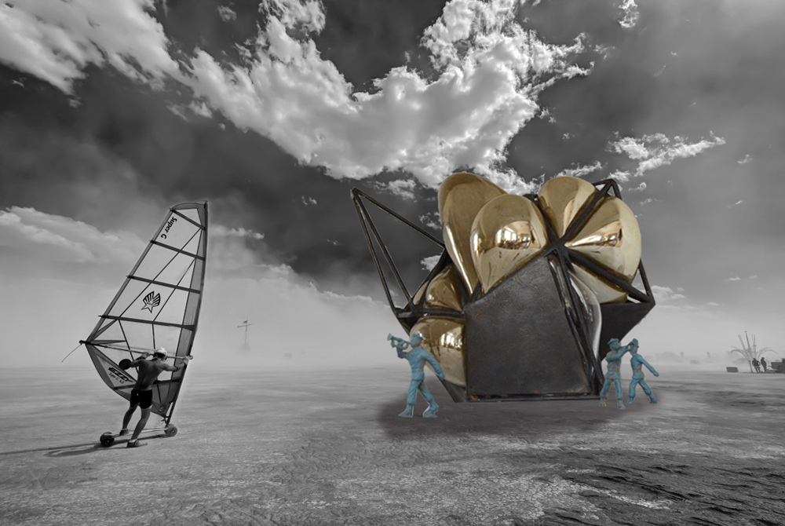
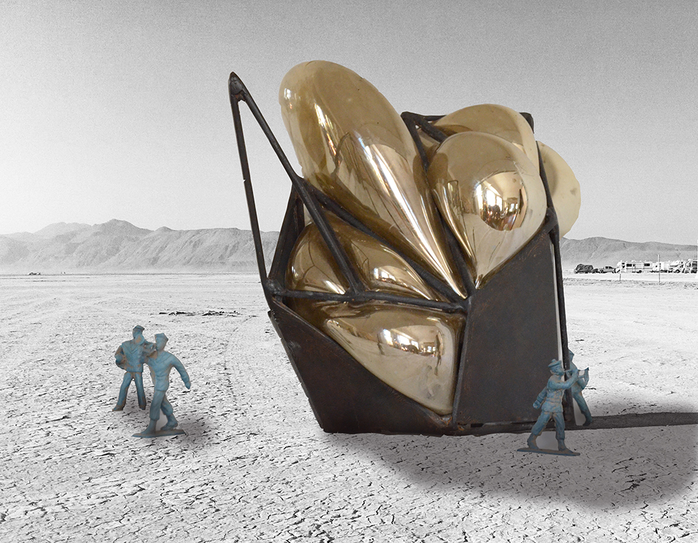
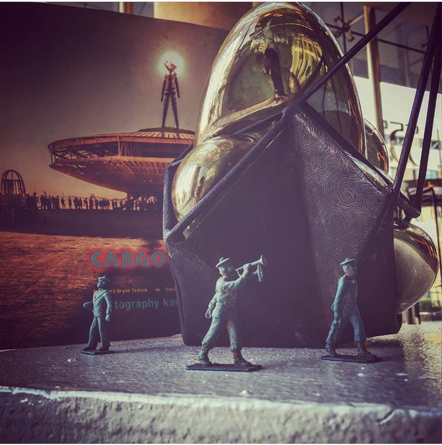

Polymath's Lightfield
A collaboration with Nathan Kandus, David Wright, Joel Thompson, and Luke Wilson
Projectors, camera, computer, metal, fiberglass
30'x30'x30'
In Creation for Burning Man, 2016
“Polymath's Lightfield” is another development of analogue video feedback first explored in Between Dimensions (2014) to create an immersive and interactive space. The presence of participants bodies within the space will affect the feedback loop. The structure itself is an exploration of rigid and fluid systems, opposing forces which contain each other.

With a 30' diameter footprint, and rising 30' into the air, the form explores the duality of the world around us. A crystaline form contains fluid "bubbles" rising out from the center.

Inside the form the ground creates a 20' diameter projection surface, while the outside is projection mapped with the video feedback produced by the internal environment.

The feedback created by this system is dynamic and self evolving even without any external input. Utilizing the ground as a projection surface 20' in diameter, the citizens of Black Rock City's presence in the space affects the nature of the projections. The following videos were developed by our team in conjunction with the Stanford Complexity Group.
<
The video below shows the feedback's interaction with a light source. This is a video test we did for Between Dimensions.